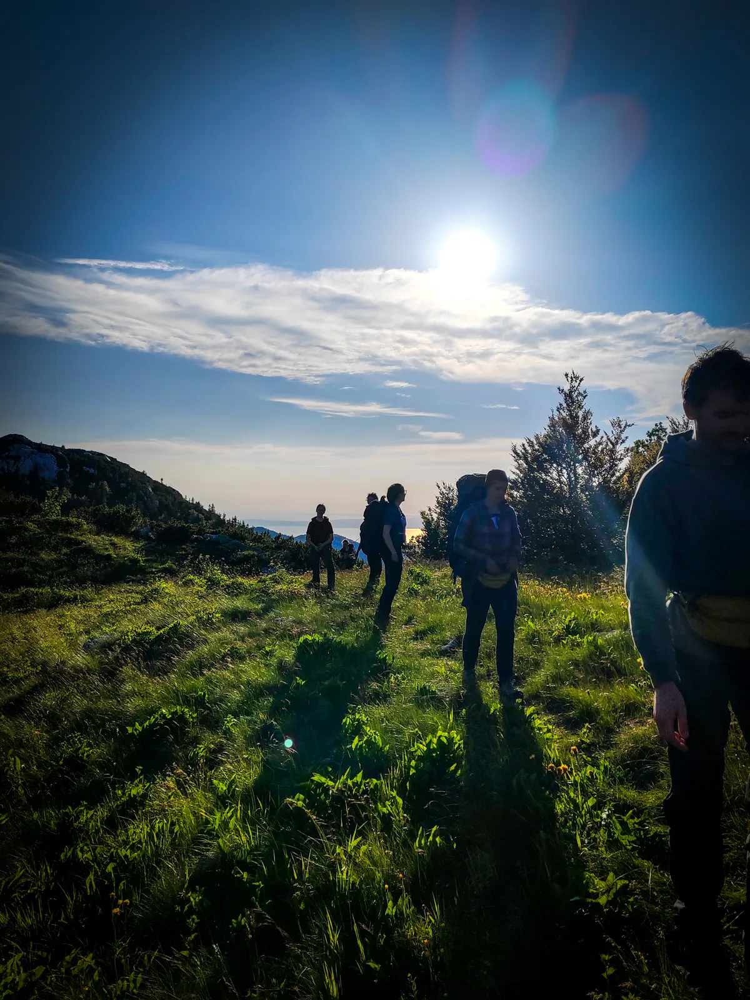

Akcijske predakcije
Došlo je ono doba godine kad počinju ekspedicije, a uz svaku ekspediciju potrebna je predakcija. Ove godine uz vodstvo naše divne Valentine, krenule su pripreme i nas 12 heroja se uputilo u malu vikend avanturu.

PREDAKCIJA AKCIJE 1
Sudionici: Marin x2, Valentina, Barbara, Dora, Goga, Luka, Darko, Filip, Igor, Lucija, Olga, Jelica, Jenny, Ana, Jurica, Tea, Mia, Sebastian. Nadam se da su to svi :)
Cilj izleta bio je pripremiti karnistere i filtere za vodu te postaviti perspektivnu jamu PT-6.
U petak 14.6. krenuli smo iz Zagreba prema Krasnom i upravi NP Sjeverni Velebit. Tamo su nas čekali karnisteri uz koje smo pokupili još nekoliko stvari. Iz Krasnog u nekoliko grupa krećemo prema Velikom Lomu gdje skupljamo još malo stvari i nastavljamo prema našem odredištu, Škrbinoj Dragi. Stižemo kasno navečer, nekoliko vozila direktno, a nekoliko, zbog promašenog skretanja, stižu tek nakon neplaniranog posjeta Zavižanu. Slijedi kratko druženje te odlazak na spavanje.
Subota 15.6.
Podijeljeni smo u 2 grupe. Jedna grupa se bavi karnisterima za istureni logor, a druga ide postavljati u jamu PT-6. Planirano buđenje je bilo 8 i pokret u 9. Uz dobro društvo i predivnu prirodu lako je zaboraviti na vrijeme te grupa za postavljanje jame kreće malo iza 10 sati. Grupu su činili Olga, Luka, Igor, Lucija, Jelica i Sebastian. Priroda je predivna, na nebu nema oblačka, vruće je i oprema je teška. Nakon 2 sata hodanja dolazimo do jame, odrađujemo drugi doručak te polako krećemo s akcijom. Luka je krenuo postavljati, pratili su ga Olga i Sebastian. Da ne čekaju u jami, Lucija i Igor su odlučili pričekati te se jedan po jedan spustiti u jamu dok drugi pravi društvo Jelici.
Postavljanje je teklo bez problema uz Lukine instrukcije mlađim i neiskusnijim speleolozima pripravnicima. Jama je pretežno vertikalna uz nešto malo hodanja. Do dijela jame kodnog imena Usrana Dvorana prolazili smo bez problema. Nakon iste, kreću nešto uži dijelovi. Spuštali smo se tako do dubine od stotinjak metara, što čini polovicu do sada istraženog dijela jame. Ostalo je još užeta taman za jedno međusidrište. To međusidrište je bilo iznad jednog uskog prolaza te smo zajedničkim snagama nakon višestrukog isprobavanja i modificiranja uspijeli optimizirati poziciju međusidrišta i užetom dosegli policu niže. Iskoristili smo sva užeta koja smo imali na raspolaganju i zadovoljni nakon dobro odrađenog posla krenuli penjati prema van.
Po izlasku iz jame napravili smo tek jedan kratki odmor budući da je Sunce bilo na zalasku a pred nama je još 2 sata hodanja do kampa. Kak smo iskoristili opremu, teret koji smo sada nosili je bio značajno manji. Sa smješkom na licu krećemo na put. Uz malo gubljenja po vrtačama Sjevernog Velebita dolazimo na stazu i stižemo u kamp malo iza 23 sata. Svi ostali su se već bili vratili. Slijedilo je druženje u prohladnoj planinskoj noći.
Nedjelja 16.6.
Buđenje i doručak su prošli u prilično ležernom tonu. Bez žurbe i presinga skuhala se kava, popila se koja piva, a nešto se i pojelo. Dogovor je da idemo do Svetog Juraja na kupanje. Prljavi i umorni potrpali smo se u aute te krenuli na put. Prvo do Krasnog, rješiti administrativne dužnosti, potom po sireve u Siranu Runolist. Nakon toga smo bili spremni za more. More nas je osvježilo, a Sunce prepržilo. Umorni ponovno sjedamo u aute i krećemo svatko svojim putem.
Sebastian Barić
Neki od nas su malo zastali i divili se prirodi, opalili koji snimak i video na "mute" da se ne čuje cviljenje pluća u pozadini. (Foto: Tea Mauhar)
PREDAKCIJA AKCIJE 2
Došlo je ono doba godine kad počinju ekspedicije, a uz svaku ekspediciju potrebna je predakcija. Ove godine uz vodstvo naše divne Valentine, krenule su pripreme i nas 12 heroja se uputilo u malu vikend avanturu.
Krenuli smo u petak (14.06.) nakon posla, rasporedili se po autima i uputili se prema Krasnom. U međuvremenu je pao dogovor, tko prvi stigne, čeka na pivi u Manjanu. Sebastijan, Jurica, Mia i ja smo krenuli oko 17 sati. Jurica nas je skupio sa svojim novim autom, a uz auto, na "poklon" je dobio MP3 CD sa interesantnim glazbenim sadržajem za koje je nastalo nenapisano pravilo, CD se ne dira. Uz taj "splet pesama" i pokoji zalutali bećarac, stigli smo prvi. Sjeli smo u Manjan, naručili Velebitsko (Velebitaši jel) i pričekali ostale. Vlasnica je odmah prepoznala tko smo i pomirila se sa činjenicom da nas dolazi još i neće tako brzo zatvoriti lokal kako se ponadala.
(Tea Mauhar)
Kad je stigao ostatak, otišli smo do uprave parka, prikupili 7 tankova za vodu (100 L), uzeli ključ od rampe i krenuli prema Škrbinoj Dragi, a neki su ostali u Manjanu jer im se grlo malo osušilo i bio im je potreban lički nektar. Dok smo stigli do Škrbine Drage, već se lagano krenuo spuštati mrak, te je jedan dio otišao skupljat drva, a mi ostali smo postavljali šatore i ono najbitnije, raspakirali hranu. Nakon što smo sve pripremili, okupili smo se svi, otvorili pivice i shvatili da nam nešto fali. Nije nam dugo trebalo da uočimo što nam treba, što je nužno za glavnu kampersku idilu... Kobasice! Iste sekunde su se krenula otvarat pakiranja raznih vrsta kobasica, oštrili se štapovi, jer nitko nije mogao dočekati žar za rešetku. Od sreće i uzbuđenja, pečenje kobasica je bilo zanimljivo. Neke su postale dio ugljen obitelji, neke se podružile sa pepelom, a neke su bile "aman-taman". Najeli smo se, podružili, popili pivicu, dvije i uputili se na spavanje jer nas je čekao naporan dan. Ustajanje je bilo oko 8 ujutro, te smo odradili nužne stvari: doručak, kava i "pogled na krajolik". Oko 10 sati jedan dio ekipe je otišao opremiti jamu PT6 sa Lukom, a mi smo se uputili na križni put. Neki su nosili tankove, neki su nosili vodu i hranu, a neki su nosili preko 15 L pive koje su rezervirane za ekspediciju ili bar prvi dan ekspedicije :).
B vitamini, koordinate mjesta nisu dostupne javnosti
Uputili smo se po stazi koja nas je navigirala do Rossijeve kolibe, teren je bio strmije prirode, pa smo uz pokoji predah i timski duh, raspoređivali teret kako bi si međusobno olakšali. Kad smo stigli do Rossijeve, nastavili smo po planinarskoj stazi, što nas je razveselilo jer je bilo lakše hodati. Neki od nas su malo zastali i divili se prirodi, opalili koji snimak i video na "mute" da se ne čuje cviljenje pluća u pozadini. Nakon nekih 2 sata planinarenja, stigli smo do odredišta gdje će biti logor i krenuli slagat filtere i sustav za skupljanje vode, a Đeni, Mia, Ana i Jurica su otišli odnijet pive do "Frižidera". Kako se pričalo, puno je jednostavnije išlo postavljanje ove godine jer su već znali otprilike gdje postaviti tankove, a imali smo i GSS-ovca Marina koji je ubrzao cijelu proceduru sa svojim znanjem i govorom "e ovo vas sigurno nisu učili u Velebitu, hehe, gle sad ovo..", dok je Barbara uz svoj karaoke plan i program podizala atmosferu. Obzirom da je sve to išlo laganini, nas par je otišlo vidjet kakva je situacija u "Frižideru". Nažalost, jer nije bilo snijega, led na dnu jame se otopio i pive nisu htjele sudjelovat i ostat na mjestu nego su bježale po jami, a to nam nije bio plan. Našli smo alternativno rješenje i iskopali rupu pored jame, označili mjesto da se zna da je to svetinja i pridružili se ostatku. Oko 20 sati vratili smo se natrag do kampa gdje smo po putu uočili dva poznata lica; Darkec i Marin “Vulgaris”, jer bez njih zabava ne postoji. Nije nužno prepričavati kako je tekao ostatak večeri jer se to već zna i podrazumijeva... pivica, gajbica, pjesmica. Neki od nas su se uputili na spavanje, a oni najjači su nastavili dalje.
Nedjelja je bila dan odmora. Pila se kava, složio se doručak i padali su dogovori kuda dalje. Prvotni plan je bio da odemo na Zavižan, al nakon subotnje "kratke šetnjice", svi su bili puno više zainteresirani za opciju odlaska na more. Spakirali smo stvari, potrpali se u aute i uputili se prema najbližoj morskoj lokaciji, Jurjevu. Tamo smo okupirali jedan dio plaže, stavili pivice na hlađenje i uobičajenu jamu zamjenili sa hladnim Jadranskim morem. Oko 15 sati lagano nam je prifalila kuća, krevet i odmor, dok se neki iz mora nisu dali. Morali smo izreći male bijele laži i rekli da idemo negdje na janjetinu kako bi pojedince izvukli iz mora. Nakon kratkog negodovanja, svi smo se pozdravili i izgrlili, te je svatko svojim putem krenuo natrag za Zagreb. Na putu prema kući, Whatsapp grupa " BAČVARI" je gorila od ljubavi, zahvalnosti i uzbuđenja te se svi grupno nestrpljivo veselimo nadolazećoj ekspediciji i novim speleo avanturama.
Tea Mauhar
Galerija fotki akcijske predakcije ekspedicije :)))
(I Jackie Chan bi nam pozavidio na sklepanom naslovu, op. adm.)
Autorice: Tea Mauhar i Valentina Plemenčić (voditeljca ekspedicijske predakcije)